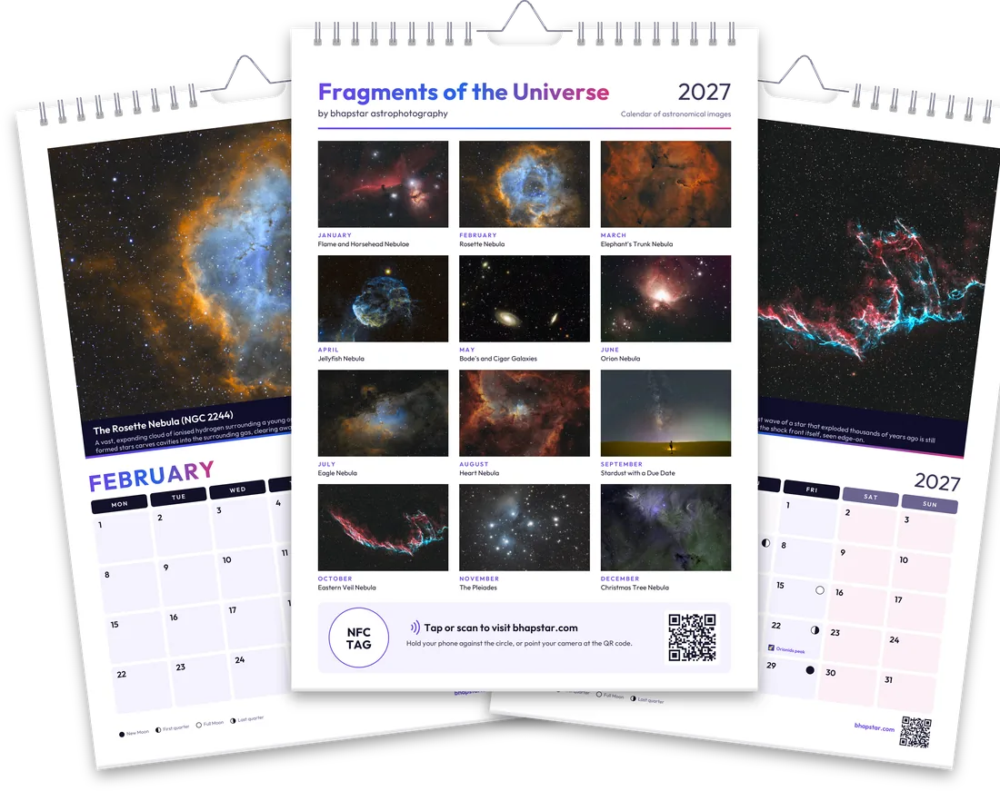
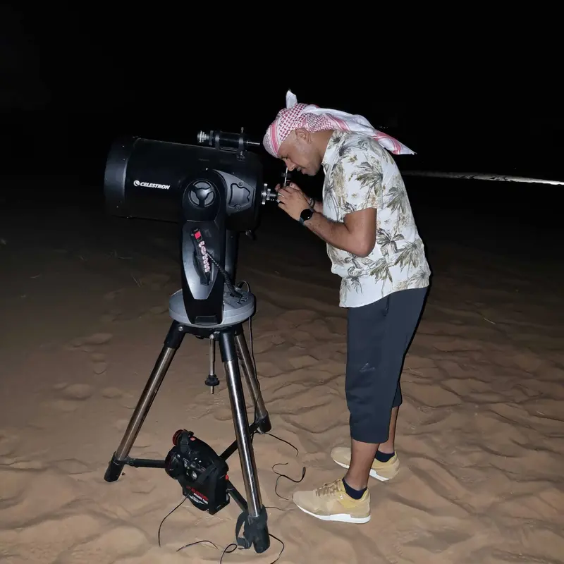

Fragments of the Universe
Nebulae, galaxies, star clusters and deep-sky objects — captured slowly through patient hours of long exposure under dark skies, pulling colour, dust and structure from the edge of space.
Here's a little thank-you — use this code on the Prints page for 10% off:

New for 2027Fragments of the Universe: twelve of my deep-sky images, one for every month, with moon phases, meteor showers and eclipses marked on the dates. A great Christmas gift for the astro lover in your life.
Nebulae, galaxies, star clusters and deep-sky objects — captured slowly through patient hours of long exposure under dark skies, pulling colour, dust and structure from the edge of space.
Hi, I'm Bhapinder (Bobby) Singh. This is where I share my astrophotography, most of it captured from in and around the UAE. Every image in the gallery has its own page, with the story behind it and how it was captured, including the equipment and conditions on the night.
Alongside the images, there are articles that cover planning a night, capturing the data and processing it, and the gear pages cover the telescopes, mounts, cameras and filters I use. If you are just starting out, Start Here has things to try on the next clear night, and Tonight shows what is worth pointing at from where you are. There are also free printable field cards, a glossary of the terms used across the site, and a few astronomy games, including a quiz and a jigsaw.
You can also install the site as an app on your phone, tablet or computer, and the main pages and field cards still open with no signal.
Any image can be ordered as a print on paper or canvas, supplied at full resolution and without the watermark. You can also order the 2027 wall calendar, with twelve of my images, one for each month.

I'm an astrophotographer focused on the quiet structure of the deep night sky: nebulae, star-forming regions and distant galaxies, alongside the Moon, star trails and our own Sun and Milky Way.
I like images that feel honest. They may not be perfect, but they are real Fragments of the Universe, showing the structure, dust lanes and faint halos of these beautiful celestial forms, shaped through careful processing that allows faint signal to emerge from the noise.
Most images begin the same way: checking conditions, waiting for a workable night, and committing the hours needed to see what the data reveals. Some nights are a win. Some nights you pack up early. Either way it is the same practice, and this site is a record of it, image by image.
For information on the working detail behind the images, the astrophotography articles section covers the gear, a night of capture, and the processing that turns data into a picture.
See below from some recent images and astro updates, or follow along for everything new.
Guides, gear notes and field write-ups. Read all articles.
If you enjoy my astrophotography or the outreach work I do, you're welcome to support the time and effort behind it.
Signup below and receive a newsletter whenever new images, gear reviews or articles are added. Or if you want to get in touch about my work, prints or anything astro-related, just drop me a message here.